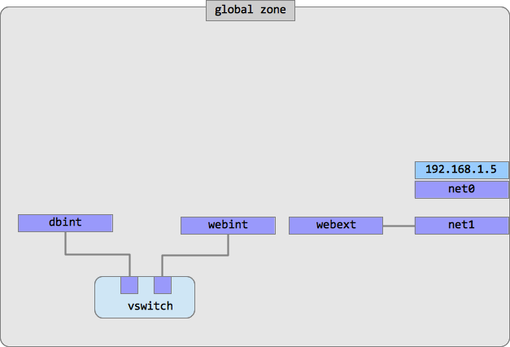

Task: You have to configure a secure multi-layered application environment in Oracle Solaris 11.
Lab: We will create two Solaris zones: one for database server and another for web server. We will connect the zones via an internal virtual switch to make sure the database zone is connected to the web zone, but not visible from the outside world. The web zone will have two network interfaces: one for internal connection to the database zone and another for external connection.
Let's start with the network infrastructure. First, we create a virtual Ethernet switch, or etherstub.
root@solaris:~# dladm create-etherstub vswitch
We will need two virtual network interfaces for our internal network. We will call them dbint and webint as soon as they are going to be used in database zone and web zone respectively and they both are going to be internal, i.e. not visible from outside.
root@solaris:~# dladm create-vnic -l vswitch dbint root@solaris:~# dladm create-vnic -l vswitch webint
For the network zone we will need another network interface. In our example we will use the second VirtualBox network interface which is called net1 in Solaris. Check if you have two network interfaces configured in your virtual machine:
root@solaris:~# dladm show-phys LINK MEDIA STATE SPEED DUPLEX DEVICE net0 Ethernet up 1000 full e1000g0 net1 Ethernet up 1000 full e1000g1
If there is only one network interface you have to power off your virtual machine and add the second network interface using VirtualBox Manager. Configure it as "Bridged Adapter".
Here is how our network configuration should look like:
Now it's time to create our zones. We are going to have two zones, one for a database server (we are going to use MySQL in this example) and another for a web server (it's going to be Apache).
We'll start with creating a separate ZFS filesystem to store zone root directories. It will be created in our root pool and mounted at /zones.
root@solaris:~# zfs create -o mountpoint=/zones rpool/zones
Zone installation process consists of three steps:
Our plan is to configure and create a database zone and then clone it to create a webserver zone. This will save time and disk space.
We start with zone configuration:
root@solaris:~# zonecfg -z dbzone zonecfg:dbzone> create zonecfg:dbzone> set zonepath=/zones/dbzone zonecfg:dbzone> add net zonecfg:dbzone:net> set physical=dbint zonecfg:dbzone:net> end zonecfg:dbzone> exit
Next, we have to create the zone's profile where we configure networking, passwords, time zone etc.
root@solaris:~# sysconfig create-profile -o /root/db-zone-profile.xml
In the dialog screens set the following system's parameters (use F2 or ESC-2 to go from screen to screen):
host name: dbzone network: Manual interface: dbint IP address: 10.0.3.10 root password: solaris1 user real name: Zone User user id: zuser user password: oracle1 time zone: select your time zone everything else: accept the defaults, just press F2 or ESC-2 to continue.
Now, we install the database zone:
root@solaris:~# zoneadm -z dbzone install -c /root/dbzone-profile.xml
It will take about 10 minutes, plus or minus, depending on your environment.
Boot the zone and then login into it to check if everything is all right.
root@solaris:~# zoneadm -z dbzone boot ...wait a couple of minutes... root@solaris:~# zlogin -C dbzone
Check if networking is OK:
root@solaris:~# ipadm
At the next step we create a webserver zone. But instead of installing it (and waiting 10 minutes) we will just clone our existing zone to save time and disk space. So, we repeat two first steps (configuration and profile creation) and then replace the third one with the cloning operation.
root@solaris:~# zonecfg -z webzone zonecfg:webzone> create zonecfg:webzone> set zonepath=/zones/webzone zonecfg:webzone> add net zonecfg:webzone:net> set physical=webint zonecfg:webzone:net> end zonecfg:webzone> add net zonecfg:webzone:net> set physical=net1 zonecfg:webzone:net> end zonecfg:webzone> exit
root@solaris:~# sysconfig create-profile -o /root/web-zone-profile.xml
In the dialog screens set the following system's parameters:
host name: webzone network: Manual interface: webint IP address: 10.0.3.11 root password: solaris1 user real name: Zone User user id: zuser user password: oracle1 time zone: select your time zone everything else: accept the defaults, just press F2 or ESC-2 to continue.
And now we clone our existing dbzone into webzone. Before doing that, halt the dbzone (we can't clone running zones).
root@solaris:~# zoneadm -z dbzone halt root@solaris:~# zoneadm -z webzone clone -c /root/webzone-profile.xml dbzone
That was faster than initial installation, wasn't it?
Now let's boot both zones and configure networking. We want both zones communicate to each other within 10.0.3.0 network and also we want webzone to communicate to the outside world via net1 interface. We want to be able to reach Internet from dbzone too, but it should not be visible from outside. To do that, we will configure a firewall in webzone to provide network address translation (NAT) for dbzone.
Login into webzone:
root@solaris:~# zlogin webzone
Configure the outgoing network interface (net1):
root@webzone:~# dladm show-phys root@webzone:~# ipadm create-ip net1 root@webzone:~# ipadm create-addr -T dhcp net1/v4 root@webzone:~# ipadm root@webzone:~# exit
Make sure that net1 has received its IP address from DHCP server (for example, something like 192.168.1.15 from your home WiFi router).
Make changes to /etc/hosts in both zones to be able to access them by names:
root@solaris:~# zlogin webzone 'echo "10.0.3.10 dbzone" >> /etc/hosts' root@solaris:~# zlogin dbzone 'echo "10.0.3.11 webzone" >> /etc/hosts'
Here is our final zones configuration:

Now it's time to configure NAT (Network Address Translation) to let dbzone communicate to the outside world. Change the NAT configuration file /etc/ipf/ipnat.conf in the webzone:
root@solaris:~# zlogin webzone root@webzone:~# echo "map net1 10.0.3.0/24 -> 0/32" > /etc/ipf/ipnat.conf
Also you have to enable IP forwarding:
root@webzone:~# ipadm set-prop -p forwarding=on ipv4
Reboot the zone and check the networking configuration alltogether.
You should be able to ping your router's IP address from db-zone:
root@solaris:~# zlogin db-zone root@solaris:~# ping 192.168.1.1 (replace 192.168.1.1 with your router's address)
If everything is configured correctly and you have open access to the Internet, you should be able to ping hosts outside your local network as well. Try pinging Google's DNS server:
ping 8.8.8.8
Our platform looks like this:

Now we are going to install some software in our cloud. To do that we need access to the default Oracle package repository http://pkg.oracle.com. So we have to configure DNS client service in both zones.
root@solaris:~# zlogin dbzone
root@dbzone:~# svccfg -s dns/client 'setprop config/nameserver = net_address: 192.168.1.1' root@dbzone:~# svccfg -s name-service/switch 'setprop config/host = astring: "files dns" ' root@dbzone:~# svcadm refresh name-service/switch root@dbzone:~# svcadm refresh dns/client
Check:
root@dbzone:~# ping oracle.com
root@solaris:~# zlogin webzone root@webzone:~# svccfg -s dns/client 'setprop config/nameserver = net_address: 192.168.1.1' root@webzone:~# svccfg -s name-service/switch 'setprop config/host = astring: "files dns" ' root@webzone:~# svcadm refresh name-service/switch root@webzone:~# svcadm refresh dns/client
Check:
root@solaris:~# ping oracle.comFor simplicity we will install the full set of AMP (Apache, MySQL, PHP) packages in both
dbzone and webzone.
root@webzone:~# zlogin webzone root@webzone:~# pkg install amp root@webzone:~# svcadm enable apache22
Check:
root@webzone:~# ipadm show-addr net1 (find out the web-zone's external IP address)
In the global zone (Solaris desktop) start the Firefox browser and enter the web-zone's IP address (in my case 192.168.1.15) as the URL. The page should read "It works!"
root@solaris:~# zlogin dbzone root@dbzone:~# pkg install amp root@dbzone:~# svcadm enable mysql
Check:
root@dbzone:~# mysql -u root
All the necessary packages are installed and services are running:

After we have prepared our platform, it's time to install our Wordpress application. Start with the database part:
root@solaris:~# zlogin dbzone root@dbzone:~# mysql -u root
Create a database for wordpress (we call it wp01 here)
mysql> create database wp01;
Add access privileges for user 'wordpress' from host 'webzone' with password 'oracle1':
mysql> grant all privileges on wp01.* to 'wordpress'@'webzone' identified by 'oracle1'; mysql> flush privileges;
Download and unpack the Wordpress distibution. You can do it either from the global zone or from the webzone. Here we will download it to the global zone.
root@solaris:~# wget http://wordpress.org/latest.zip root@solaris:~# unzip latest.zip
Now we have to enter our database parameters into Wordpress configuration. Rename the wp-config-sample.php file to wp-config.php.
root@solaris:~# cd wordpress root@solaris:~/wordpress# mv wp-config-sample.php wp-config.php
Enter database details in wp-config.php
root@solaris:~/wordpress# vi wp-config.php
Edit the following lines:
// ** MySQL settings - You can get this info from your web host ** //
/** The name of the database for WordPress */
define('DB_NAME', 'wp01');
/** MySQL database username */
define('DB_USER', 'wordpress');
/** MySQL database password */
define('DB_PASSWORD', 'oracle1');
/** MySQL hostname */
define('DB_HOST', 'db-zone');
Now we have to copy the Wordpress distribution to the webserver document root. We can do it from the global zone:
root@solaris:~/wordpress# mkdir /zones/web-zone/root/var/apache2/2.2/htdocs/blog/ root@solaris:~/wordpress# cp -r * /zones/web-zone/root/var/apache2/2.2/htdocs/blog/
Now your can install Wordpress from your browser, either from your global zone or from other computer in the same network. Open the browser and enter the URL http://192.168.1.15/blog/wp-admin/install.php